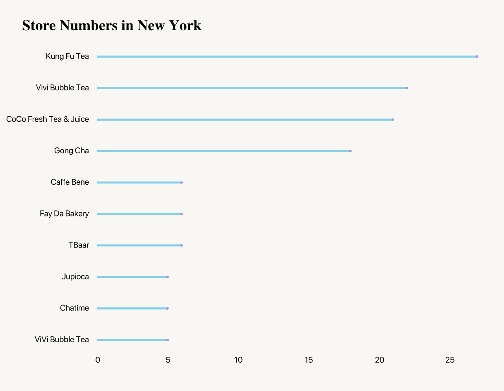

New Yorker Taste on Bubble Tea
BY Sirui Zhu
Published on 10th August
Bubble tea is originally from Taiwan, China. After becoming a hit in Taiwan, bubble tea was embraced throughout Asia. It started to become increasingly available on the East and West Coasts a few years back.
There are more bubble teas in Western countries over the years. Walking in Soho district in Manhattan, you can also see some related shops.
Here, I scraped from Yelp, with all the bubble teas in the New York, get all the reviews and ratings customer gave. Might have some interesting findings.
Bubbling up
Perhaps the drink’s most divisive quality is the sensory experience of drinking it. Consumed through wide plastic straws designed to fit a tapioca pearl, roughly half an inch in diameter, the pearls often get stuck in the straw and then rush suddenly into the mouth once released. The texture of the pearls is soft but chewy, while other toppings such as pudding and grass jelly provide a silkier touch with little resistance.
In China, some bubble tea shops also create some other drink with toppings, and very popular online, we called it "wanghongcha" (means popular with online recommendation)
Most Recommend
I chose the good reviews with rating 4.0 and 5.0 by customers, and you can see, Kung Fu Tea has the most customers giving high score in rating.

NOTE: Some of them are not just bubble tea store
SOURCE: yelp
As far as I know, Gong Cha and CoCo Fresh Tea&Juice are also very popular in China, it seems they also welcomed by people in the New York!
Store numbers
Vivi Bubble Tea, a franchise business, has 45 shops in the United States, most of them on the East Coast, and seven more under construction. CoCo Fresh Tea and Juice has 32 locations in the country, 22 of them in New York City.

SOURCE: Yelp
How about reviews?
I selected the good reviews for the top rating stores, doing a tfidf analysis, and be able to have those words. I divided the words into flavor and description words. The larger the bubble is, the more important that world is.
We can see that over the past 12 years, the old people depenfency radio has increased while children radio declined, with a steady and slow increase trend.
SOURCE: Yelp
Many bubble tea companies have opened stores near college campuses. Maybe because there are many Asian students.